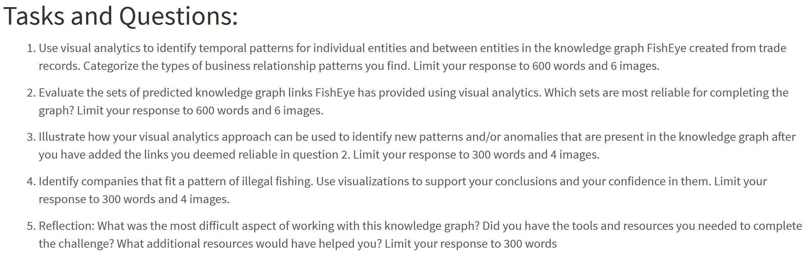

Take-home Exercise 2
The Task
With reference to Mini-Challenge 2 of VAST Challenge 2023 and by using appropriate static and interactive statistical graphics methods, you are required to help FishEye identify companies that may be engaged in illegal fishing?

Important
- You only need to attempt one out of the four questions (excluding Question 5) provided above.
- The data should be processed by using appropriate tidyverse family of packages and the statistical graphics must be prepared by using appropriate R packages.
Assessment Rubic
- Quality of Visual Storytelling (30%): Ability to provide visually-driven discussions and answers on the tasks and questions chosen.
- Quality of Data Visualisation (30%): Appropriateness, functional and aesthetics of the data visualisation used.
- Quality of Data Preparation and Wrangling (20%): Appropriateness and proficiency of using tidyverse and other related R packages to prepare and wrangle the data.
- Quality of Reproducibility (20%): Completeness and comprehensiveness of documenting the data visualisation process including and not limited to data import, data preparation, data wrangling, data integration and data visualisation design.
Submission Instructions
This is an individual assignment. You are required to work on the take-home exercises and prepare submission individually.
Important
The specific submission instructions are as follows:
- The write-up of the take-home exercise must be in Quarto html document format. You are required to publish the write-up on Netlify.
- Provide the links to the Take-home Exercise write-up and github repository onto eLearn (i.e. Take-home Exercise section)
Submission date
Your completed take-home exercise is due on 28th May 2022, by 11:59pm evening.
KickStarter
- KickStarter of Take-home Exercise 2 in html format.
Peer Learning
- ABHISHEK SINGH
- CAO FEI
- CHAN HIN PHUNG
- CHEN FANGXIAN
- DABBIE NEO WEN MIN
- DENG ZHAN
- FANG ZI WEI
- FONG BAO XIAN
- HAILEY CHEONG SZE-YENN
- HAN SHUMIN
- HUYNH MINH PHUONG
- KIM JUNSEOK
- KWA KAH BOON
- LEE PECK KHEE
- LEONARD LEE JINZHEN
- LIANG SZE LEONG
- LIANG YAO
- LIM LI YING
- LIN LIN
- LINN THAW TAR
- LIU JIAQI
- LIU YAN
- LOH JIAHUI
- NEO YI XIN
- OH JIA WEN
- ONG CHAE HUI
- SEOW KIAT HUI LENNIS
- SHERINAH BINTE RASHID
- TAN XIN XIAN WILSON
- TAN YI RONG SHAUN
- TAN YU YAN RACHEL
- THNG YAO WEN
- WAN XINYU
- WANG SHENGMING
- YANG JUN
- YANG TIANYI
- YAP PIN YAW
- YE NAING OO
- YEN YUN-HSUAN
- ZHOU AO
Learning from Past Work
- ISSS608 2016-17 T3 Assign GUAN YIFEI. Although this assignment was completed by using Tableau Professional but there are a lot we can learn from the submission especially the discussion of visual insights.
- ISSS608 2016-17 T3 Assign ZHANG YANRONG. Although this assignment was completed by using QGIS and Tableau Professional but there are a lot we can learn from the submission especially the discussion of visual insights.
- ISSS608 2021-22 April Term Assignment 6: Ong Zhi Rong Jordan
- ISSS608 2021-22 April Term Assignment 6: Raunak Kapur